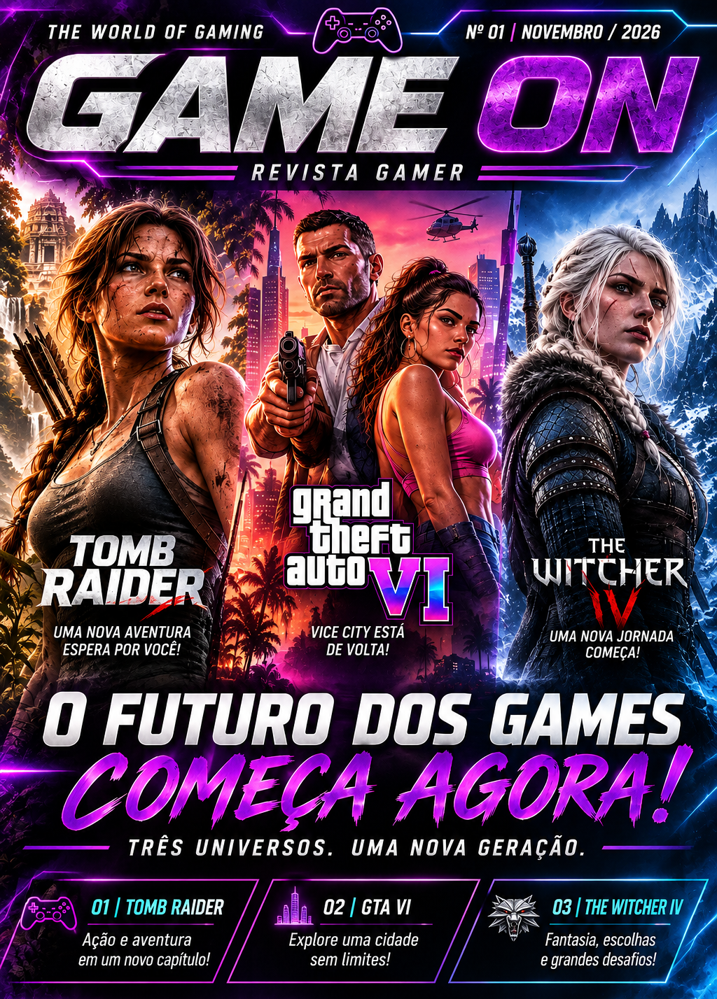

GAME ON
THE WORLD OF GAMING
EDIÇÃO Nº 01 | NOVEMBRO / 2026
★ EDIÇÃO ESPECIAL ★
O FUTURO DOS GAMES
COMEÇA AGORA!
TRÊS UNIVERSOS. UMA NOVA GERAÇÃO.

DESTAQUES DA EDIÇÃO
01 | TOMB RAIDER
Uma nova aventura, desafios e descobertas!
02 | GRAND THEFT AUTO VI
Explore um universo cheio de possibilidades.
03 | THE WITCHER IV
Uma nova jornada pelo mundo da fantasia.
O QUE VOCÊ ENCONTRA NESTA EDIÇÃO?
1. Os jogos mais aguardados da nova geração.
2. Novidades do universo gamer.
3. As próximas tendências da tecnologia.
EDITORA E DIAGRAMADORA
Bruna Keitlin Ramos Santos
GAME ON - SUA CONEXÃO COM O UNIVERSO DOS GAMES!
INFORMAÇÃO | ENTRETENIMENTO | TECNOLOGIA